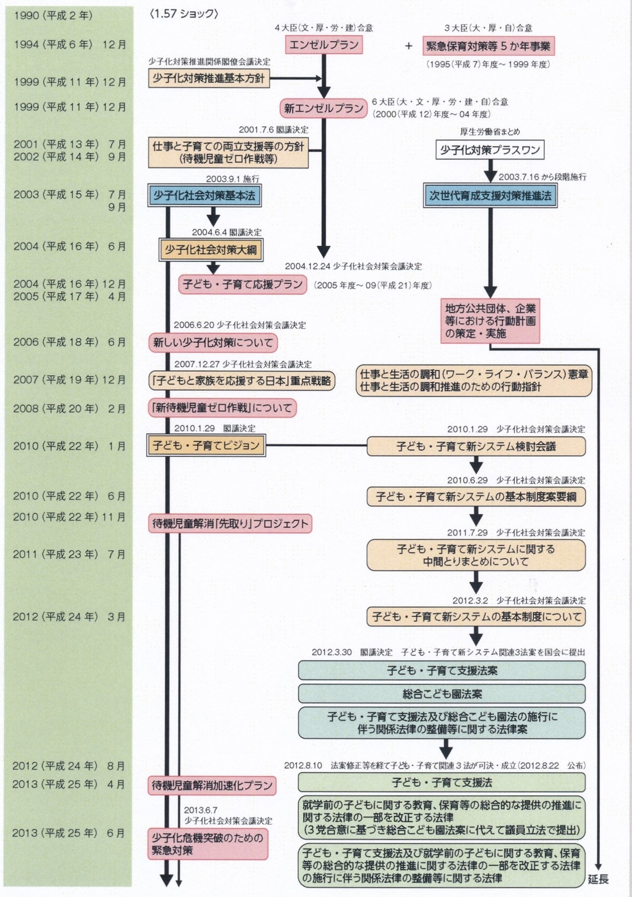
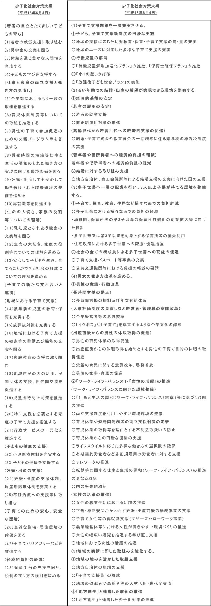

第一章 人口減少は新しい豊かさへの転換期
※緑字にカーソルをあてると詳細が書かれた吹き出しが表示されます。カーソルを離すと吹き出しは消えます。
※(※外部サイト参照)をクリックすると該当する外部サイトに移動します。
※緑字をタップすると詳細が書かれた吹き出しが表示されます。別の場所をタップすると吹き出しは消えます。
※(※外部サイト参照)をタップすると該当する外部サイトに移動します。
第一節 本章の概要
本研究の大仮説である「人口減少は新しい豊かさへの入り口である」という発想は、人口減少社会への転換を「本当に豊かで幸せを感じられる社会をつくっていく格好のチャンスあるいは入り口と考えられるのではないか」ととらえる広井(2013)広井良典(2013)『人口減少社会という希望：コミュニティ経済の生成と地球倫理』朝日新聞出版(pp.6-9).の知見を借りた。本章ではここに「新しい豊かさとは何か」というリサーチクエスチョンと「拡大・成長に代わるものではないか」という仮説を置き、人口減少に到る経緯を対象とし、文献研究により検証を進めていくこととした。
第二節 問題の所在
まず、人口減少とはどのようなことを指すのか。そこには出生数が関連する。図2は、厚生労働省(2014)e-Stat(政府統計の総合窓口)(2014)「年次別にみた出生数・率(人口千対)・出生性比及び合計特殊出生率」(2021/5/9閲覧).(※外部サイト参照)が公表した人口動態統計を基に筆者が作成した日本の出生率及び合計特殊出生率の年次推移を示した図である。
図2 日本の出生率及び合計特殊出生率の年次推移
平成26年の出生数は1,003,539人で前年より26,277人の減少、合計特殊出生率は1.42で前年より0.1ポイントの減少を見せている。
ではこの出生数が減少することや、合計特殊出生率が下がることの何が問題なのか。人口問題審議会(1997)人口問題審議会(1997)「Ⅱ 少子化の現状と将来の見通し」『少子化に関する基本的考え方について：人口減少社会、未来への責任と選択』(2021/5/9閲覧).(※外部サイト参照)によると、「現在の人口を将来も維持するのに必要な水準」は2.08だという。この数値は人口置換水準と言う。この人口置換水準を保つことが出来なければ、人口は減少していくと考えられているのである。以下図3は国土交通省計画局(2011)国土交通省計画局(2011)『「国土の長期展望」中間とりまとめ 概要』(p.4)(2021/5/9閲覧).(※外部サイト参照)が作成した日本の総人口の長期的な推移を示した図である。
図3 日本の総人口の長期的な推移
図3を見ると、2004年をピークに日本の総人口が急降下していく展望が見える。
厚生労働省(2015)の人口動態調査における「年次・性別人口」e-Stat(政府統計の総合窓口)(2015)「年次・性別人口」(2021/5/9閲覧).(※外部サイト参照)のデータを見ると、実際は2006年から人口減少が始まり、2010年、2014年は前年度より総人口が増加したものの、ピーク時の2005年と比べると2014年の総人口は772,902人の減少となっている。
また自然増減数(出生数から死亡数を減じたもの)の観点でみると、同調査における「年次別に見た人口動態総覧」e-Stat(政府統計の総合窓口)(2015)「年次別に見た人口動態総覧」(2021/5/9閲覧).(※外部サイト参照)のデータでは、2007年より8年連続のマイナスを見せている。
図3に記されている通り、「我が国の人口は長期的には急減する局面に」立っていると言える。
ではこうした人口の急激な減少は、具体的にはどのような社会現象をもたらすのか。The economist(2010)The Economist Newspaper Limited(2010)「The economist」(2021/5/9閲覧).(※外部サイト参照)は「Japan’s burden(日本の負担)」として「GDPの縮小による日本の生活水準の低下」、「社会保障費の増加」、「市場の縮小による失業率の増加」という3つの予測を立てている。
第1に「GDPの縮小による日本の生活水準の低下」が予測されているのは、GDPが労働生産性(一人の労働者が一年間働くことで生み出される生産物の量)と労働者数をかけたものだからである。人口減少によって労働者数が減ることで、今後GDPは縮小傾向に入り、日本の生活水準の低下が起こると考えられているのである。
第2の「社会保障費の増加」とは、年金や医療制度の費用増大や、現役負担の問題を指している。少子化による人口減少のみでなく、少子高齢化における人口構造の変化も懸念されているのである。
第3の「市場の縮小による失業率の増加」とは、人口減少において需要が減り、それにより企業は投資を抑制させ、市場は収縮し、よって失業率も増加するという考えから来ている。
こうした予測を呼ぶ人口減少に対し、日本はこれまでにその人口減少を引き起こす少子化に焦点を当てて対策を立ててきた。よって第三節では、日本のこれまでの少子化対策の経緯をまとめていくこととする。
第三節 日本のこれまでの少子化対策の経緯
厚生労働統計協会(2014)厚生労働統計協会(2014)『国民の福祉と介護の動向・厚生の指標』No.61, Vol.10(p.76).によると、「日本でも、昭和50年代以降、出生率の持続的な低下が始まったが、戦前の『産めよ、増やせよ』の経験から出生に対する公権力の関与はタブー視されており、出生促進策が正面から取り上げられることはなかった。そうした状況を大きく変えたのが、平成2('90)年のいわゆる1.57ショック(前年の特殊出生率が丙午干支のジンクスのこと。そのためにその年には生み控えが多く起きたと考えられている。で1.58まで落ち込んだ昭和41('66)年の水準を下回ったことを指す)であった」のだという。具体的な少子化対策の経緯は以下の平成26年版少子化社会対策白書内閣府編(2013)『平成26年版 少子化社会対策白書』勝美印刷(p.38).の表の通りになる。
表1 少子化対策の経緯
これに加えて、平成16年に公布された「少子化社会対策大綱」が平成27年にリニューアルされることとなった。以下表2は、その平成16年版内閣府(2004)「少子化社会対策大綱」(2021/5/9閲覧).(※外部サイト参照)と平成27年版内閣府(2015)「少子化社会対策大綱～結婚、妊娠、子供・子育てに温かい社会の実現をめざして～」(2021/5/9閲覧).(※外部サイト参照)の「少子化社会対策大綱」の重点課題の見出しをまとめたものである。
表2 「少子化社会対策大綱」平成16年版、平成27年版比較検討表
表2で2つの「少子化社会対策大綱」を比較すると、2015年版には新しく「若い年齢での結婚・出産の希望が実現できる環境を整備する」、「多子世帯へ一層の配慮を行い、3人以上子供が持てる環境を整備する」というキーワードが重点課題に新たに加えられたことがわかる。
対して2004年版で上げられていた「若者の自立とたくましい子どもの育ち」や「生命の大切さ、家庭の役割等についての理解」に関する項目は、重点課題ではなく「きめ細かな少子化対策の推進」として別添1の後半にまとめられている。
また2004年版の「労働時間の短縮等仕事と生活の調和のとれた働き方の実現に向けた環境整備を図る」の中で上げられていた「フレックスタイム」や「テレワーク」の案が2015年版でも残されていることに対して、「ワークシェアリング」の案は2015年版ではその姿を消したことが特徴的と言える。
こうした取組を重ね、日本は少子化対策を進めてきた。ではそこにさらにどのような工夫を加えていけるだろうか。筆者は改めて人口減少社会における問題の所在を捉え直すことが必要であると考えている。
よって次の第四節では、第二節で取り上げた内容を振り返ることで、それらがどのようにリフレーミングしていけるかを検討していくこととする。
第四節 問題の所在の捉え直し
まずは第二節で示した図3をここで改めて振り返ることとする。広井(2013)広井良典(2013)『人口減少社会という希望：コミュニティ経済の生成と地球倫理』朝日新聞出版(p.6).は、このグラフを見る際に「明治以降の私たち日本人が、いかに相当な“無理”をしてきたか」と捉える視座を提示している。
図3 日本の総人口の長期的な推移
当初は「富国強兵」のスローガンを掲げ、その行き着いたところが敗戦であった後も、あたかも“戦争勝利”が“経済成長”という目標に変わっただけで、基本的な心のもちようは同じのまま、上昇の急な坂道を上り続けたのである。この10年ないし20年は、そうした方向が根本的な限界に達し、あるいは無理に無理を重ねてきたその矛盾や“疲労”が、様々な形の社会問題となって現れていると見るべきではないか。
この文章の後に、本章の冒頭でも紹介した「本当に豊かで幸せを感じられる社会をつくっていく格好のチャンスあるいは入り口と考えられるのではないか」という文が続けられ、図3が示す社会現象のリフレーミングがなされている。
筆者はこの広井(2013)の知見に示唆を受け、本章のリサーチクエスチョンを「新しい豊かさとは何か」と、そしてその仮説を「拡大・成長に代わるものではないか」と置いた。第二節の図3のグラフを再考した後にこれらを振り返ると、その新しさはかつて我々日本人が一度体験したものであろうことがわかる。ではそうした新しさは、現代においてはどのような形で再構築し得るだろうか。
第二節で紹介したThe economist(2010)が提起する「Japan’s burden(日本の負担)」は、「GDPの縮小による日本の生活水準の低下」、「社会保障費の増加」、「市場の縮小による失業率の増加」の3つに分けられていた。そしてその解決策として女性・高齢者・移民の雇用推進が当記事の中で推奨されていたが、筆者はここに2015年度版の「少子化社会対策大綱」で消えたワークシェアリング労働時間を短縮することによって仕事を分かち合うこと。(※参考：藤田宏(2013)「日本型ワークシェアリングで若者の雇用は改善できる」『国公労調査時報』No.604(p.27).)の考え方も盛り込まれるべきだと考えている。何故なら、それぞれの負担は「資源配分の適切化」と「過剰の抑制」によって緩和できると考えるからである。
まず「資源配分の適切化」とは、言わばGDP縮小後の資金のやりくりのことである。以下は松谷明彦と藤正巌(2002)松谷明彦・藤正巌(2002)『人口減少社会の設計』中央公論新社(p.57).による説明である。
例えば、いままで毎年増加してきた収入が突然横ばいになったとき、人はどうするだろう。収入が増加するときは、その増加分でいろいろと新しいことができた。しかし収入が伸びなくなると、新しいことをするには、何かを取り止めなければならない。そこで自分の生活を見渡し、さほど必要でないと思われる出費を抑え、あるいは買い替えを予定していた車や家財道具も引き続き使うことにして、よりよい生活を営むための資金を捻出しようとするのではないか。つまりそれが今後の日本経済に必要とされる資源配分の適切化である。
また松谷・藤正(2002)はこのことに加え、GDPの低下が直接国民の生活水準の低下に繋がる訳ではないとし、新製品ラッシュによる意図的な旧製品の陳腐化や耐用年数の短縮化等の日本経済の水膨れ的な現状を指摘した上で、日本の企業構造や産業構造の改革を提案している。
さらに広井(2013)広井良典(2013)『人口減少社会という希望：コミュニティ経済の生成と地球倫理』朝日新聞出版(p.37).も同じように、「経済の成熟期ないし定常期には、成長期とは異なる経済倫理が必要になってくるのである」との指摘から「過剰の抑制」の提案を行っている。現在の日本の貧困や格差は、The economist (2010)が指摘するようなGDPや市場の収縮からではなく、むしろ生産過剰の状態から来ていると考えられているからである。その具体的な展開は「Time policy(賃労働時間を短縮し、それを地域、家族、コミュニティや自然などに関わる賃労働以外の時間にシフトする等)」、「労働集約的な分野(福祉、教育など)への労働力シフト」、「環境政策などでのサービサイズ(モノを売る事業ないし経済活動を人が提供するサービスを売る事業に再編していくこと)」、「フレシキュリティ (柔軟な労働市場と十分な生活保障および積極的雇用の組み合わせ)」等があり、広井(2011)広井良典(2011)『創造的福祉社会：「成長」後の社会構造と人間・地域・価値』精興社(pp.16-20).はこれらの展開から成長に依存しない「脱成長」型の社会モデルの実現を提案している。
こうした「資源配分の適切化」や「過剰の抑制」は、The economist [2010]が言う「Japan’s burden(日本の負担)」を緩和させるだけでなく、日本が「新しい豊かさ」を獲得していくことにもつながると筆者は考えている。確かにそうした取り組みによって一人当たりの経済面での需要や労働力は減少するかもしれないが、そこで浮いた労働力を、地域における高齢者の支え合いシステムの取り組みやファミリーサポートセンターの取り組み等、地域活動へ活かしていくことも出来るだろう。また需要もそうした方面へシフトしていくと考えられる。そのことがひいては新しい雇用を生み出し、子育てのしやすい・高齢者にとって住みやすい環境を創り出すという、社会保障における有効性も期待できると考えるのだ。
第五節 本章のまとめ
これらのことから、筆者が本章で置いた「新しい豊かさとは何か」というリサーチクエスチョンの答えには、「人と人との新しいつながりではないか」と置くことが出来る。そしてその新しさは第四節にも記した通り我々日本人が既に経験していることで、それをどのように現代に再構築出来るかがテーマになると考える。
よって次章では、そのもう一つの仮説である「地域福祉が鍵となるのではないか」ということを基に、「地域資源をどう活用するか」というリサーチクエスチョンと「地域資源を使いやすく編成していく必要があるのではないか」という仮説を扱い、第一章と同じく文献研究により検証を行うこととする。